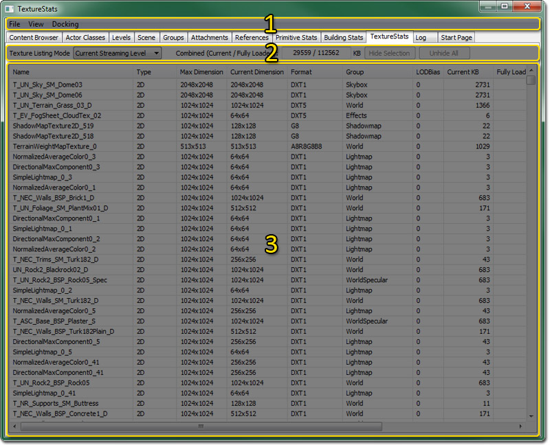
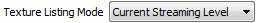

UDN
Search public documentation:
TextureStatsBrowserReferenceJP
English Translation
中国翻译
한국어
Interested in the Unreal Engine?
Visit the Unreal Technology site.
Looking for jobs and company info?
Check out the Epic games site.
Questions about support via UDN?
Contact the UDN Staff
中国翻译
한국어
Interested in the Unreal Engine?
Visit the Unreal Technology site.
Looking for jobs and company info?
Check out the Epic games site.
Questions about support via UDN?
Contact the UDN Staff
UE3 Home > Unreal Editor and Tools > テクスチャ統計のブラウザ参照
テクスチャ統計のブラウザ参照
概観
テクスチャ統計ブラウザ
テクスチャ統計ブラウザの構成

メニュー バー
ファイル
- Export (エクスポート) - CSV ファイルにテクスチャ統計情報をエクスポートします。
ビュー
- Refresh (リフレッシュ) - テクスチャ統計情報をリフレッシュします。
ドッキング
- Docked (ドッキング化) - このオプションによって、現在浮遊しているブラウザをメインのブラウザウィンドウにドッキングします。現在のブラウザがドッキングされると、このオプションにチェックが入ります。
- Floating (浮遊) - このオプションによって、ドッキングしているブラウザをメインブラウザから切り離し、独自のウィンドウをもつ浮遊ブラウザにします。現在のブラウザが floating になった場合は、このオプションにチェックが入ります。
- Clone Browser (ブラウザのクローン化) - このオプションによって、現在のブラウザの複製を作ります。
- Remove Browser (ブラウザーの削除) - このオプションは、現在のブラウザを移動すなわち削除します。このオプションは、クローン化されたブラウザウィンドウ上でのみ有効です。
ツール バー
|  | 統計リストの リストモード を変更します。 |
 | 現在における、完全にロードされたテクスチャのメモリ使用を表示します。 |
| 統計リストにおいて、現在選択されたテクスチャを非表示にします。 | |
 | 統計リストにおいて、非表示になっているすべてのテクスチャを非表示解除にします。 |
Remote Capture (リモートキャプチャ) の使用方法
エディタが起動した後で、遠隔接続のターゲットを選択しなければならない場合があります。 これで、テクスチャ統計において、Remote Capture モードが使用可能になりました。
テクスチャ リストモード
統計リスト
- ライン上で左ダブルクリックをすると、ContentBrowser 内のテクスチャに飛びます。(ただし、テクスチャパスが利用可能なパッケージの中に見つかった場合)
- ライン上で右クリックすると、ポップアップメニューが開きます。これによって、選択を変更できるようになったり、マテリアルを参照するアクタまたはマテリアルにジャンプできるようになります。また、ライン上で右クリックすることによって、エディタカメラの位置を、検索されたアクタの 1 つに変更することができます。
- コラムのラベル上をクリックすると、その基準でソートします。もう 1 度クリックすると、その逆順でソートします。2 つのソート基準が維持されるので、より快適に閲覧できます。
- 左クリック (さらなるオプションには、シフトキーおよびコントロールキー) によって、アセットを選択できます。
- 選択されたアセットは、右クリックのポップアップメニューまたは [Hide Selection] (選択を非表示にする) ボタンで非表示にできます。
- アセットのリストの非表示は、エディタが終了するか、Unhide All (非表示をすべて解除する) によって非表示になっているアセットが表示されるようになるまで、保持されます。
コンテクストメニュー
- Find Actors using this texture - 選択されたテクスチャ (複数可) を使用しているあらゆるアクタを選択するとともに、そのアクタにカメラの焦点を合わせます。
- Find Materials using this texture in the Content Browser - コンテンツブラウザを開き、選択されたテクスチャ (複数可) を使用するあらゆるマテリアルを選択します。
- Invert Selection - 選択を解除するとともに、前回選択されなかったすべてのテクスチャを統計リスト内で選択します。
- Hide Selection - 現在選択されているテクスチャを統計リスト内で非表示にします。
- Unhide All - 現在非表示になっているすべてのテクスチャを統計リスト内で非表示解除にします。